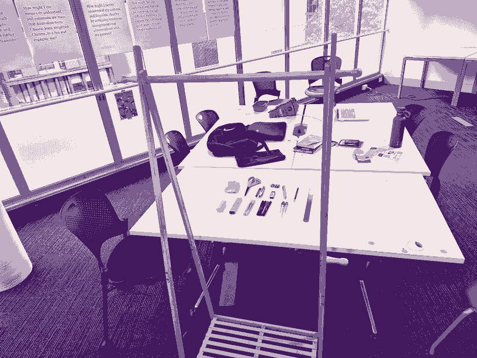

Aims
Process/Methods
I decided to use photography to document my bag, as it is a medium I am comfortable with, and can work quickly with. This project felt like one where making it would reveal more than pondering it so I just jumped in, sort of making it up as I went.
- I got everything out of my bag and looked at it, some things contained more things (pencilcase, wallet, lunch bag) so I decided to set the photos up in babushka doll, layered style.
-
I wanted to have some interactive element so I decided to take a photo
of the whole collection then repeat it with an object slightly moved
to use when interacting with that object.
This meant I needed to take somewhat consistent photos but I wasn't using a tripod or a studio setup so I used this clothes rack in the honours room and leaned on it in a vaguely consistent way. -
After taking the photos I had to figure out how to process them, due
to the inconsistent nature of the photography setup, just swapping the
whole photos was pretty bad.
So I had to cut the "animated" objects out of their photos and on to the original - Once I had the photos I could just load them into frames on figma and prototype the hover reactions to create a simple interactive archive
- I have not swapped or discussed the archive with anyone else yet

I also worked on how I document my experiment log as I went:
- I created a new section for experiment logs in my Obsidian vault as I had been finding my notes were getting lost in the different days or lessons in which I worked on them
- I created the note for this experiment log as I was going, stopping to write things down that I could do better or that came to mind, keeping myself able to complete a prototype I can see the flaws in, and seeing the value in making something flawed
- I used dot points and started to develop an experiment log system that works better for me to refer back to
Reflection on action
I was generally happy with how this experiment went, I got started and got something kind of interesting done in just a few hours. The editing was laborious, which is not inherently bad, but it was largely preventable if the setup and photography was done better. I really found myself drawn to describe or explain the objects, but reading the short brief I held back in order to let others draw their own conclusions first.
Reflection for Action
Photography
- Setting up a studio situation (Light, stable camera position, enough space)
- Using photography to create interaction (What more could be done to improve the little moments of interaction)
- Editing (What sort of editing is done in these kinds of photos? How much editing is reasonable for an archive?)
- Lenses (What lens is good for distortion, or what is the post-processing to counteract distortion)
- Consider how the photos can be taken so the elements can be smaller (keep enough distance between the items so smaller file size images can animate)
- I used my phone, which due to its built in software editing is really inconsistent shot to shot, can I fiddle with the setting to mitigate this? Find an app that shoots "raw" phone photos?
Design
- Consider the UI/layout/typography more (what style, hierarchy)
- Design with less fidelity and more efficiently (less time)
- When time constrained I jump into to making the thing and don't fully explore the development phase
Figma
-
Consider the workflow of the software better
- Decide what the flow of the project/experiment is, what links are needed
- Group sections with similar content (especially hovers and simple prototype pages)
- Fully design out a single page first
- Make the editable elements into components
- Research if there is a better method for animating elements on hoverin Figma